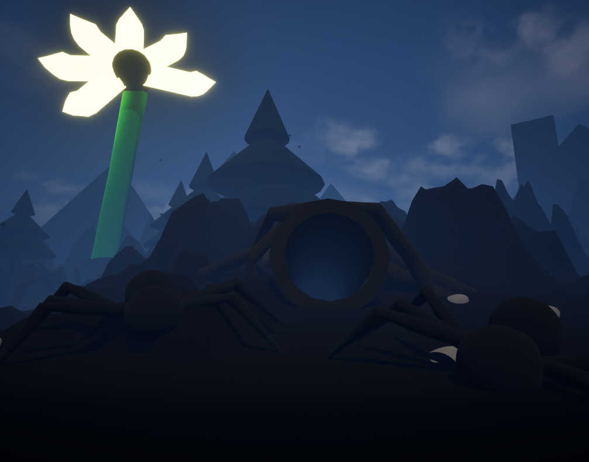
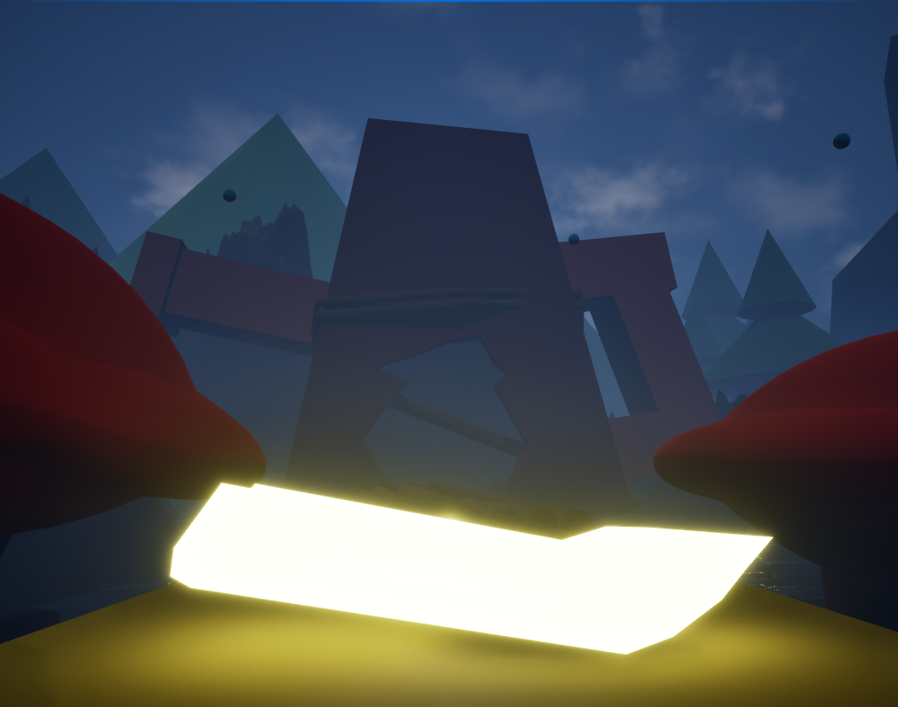

LEVEL DESIGN / UNREAL ENGINE / JULY–AUGUST 2026
The Last Bloom
A small explorer in an oversized garden, following light, landmarks and the promise of restoration.

My contribution
I designed and built the level across three major areas, using pathways, landmarks and environmental cues to guide the player. My work included revising navigation in response to player feedback. The project was built with Unreal Engine and Blueprints.
The problem
How do you help a tiny player find their way through a large, unfamiliar garden without making the world feel like a corridor? The level needed a visible goal and a route that could be understood through the environment.
The constraint
The experience depends on first-person navigation at an unusual scale. The giant flower, garden routes and underground colony need to form a readable journey while maintaining the atmosphere of a dying garden.
The design choices
The giant flower serves as a long-range landmark. Lighting, colour contrast, elevation and environmental framing support the route, while the plan connects exploration and petal collection with restoring the garden.


What changed
My original project account records using player feedback to identify navigation issues and revise pathways and visual cues. The source material also includes an earlier level plan, a later beat plan and multiple submitted versions. No tester count or measured improvement is claimed.
What you can play
The download contains the existing full Windows level build. Extract the entire ZIP and run Project1.exe; the launcher keeps its original Unreal project name. Keep the Engine and Project1 folders beside it. Unreal Engine is not required to play.
Controls: WASD to move, mouse to look, Space to jump and E to interact when prompted. This is a native Windows game. A complete playthrough is not part of the current verification.
Credits and context
Level-design coursework by Celeste Tong. Engine, template and third-party assets remain credited to their owners. The original ending text credits audio to freesound.org. The screenshots are original submitted level views; private assessment documents are not included in the download.